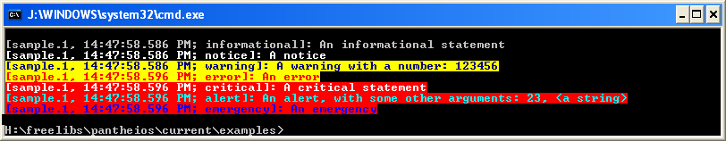
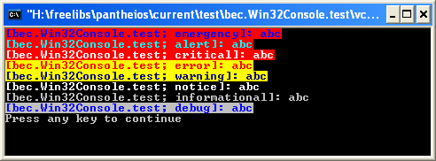

|
|
|
|
|
|
Consequently, the modification of back-end characteristics at runtime is not directly supported, and it is the intention that use of sophisticated back-ends whose behaviour is runtime modifiable is left to back-end extensions. The stock back-ends provide simple transports only.
Notwithstanding, certain stock back-ends have a potential spectrum of behaviour that means some limited runtime decision-making would be of use in a significant number of scenarios. It has proven possible to facilitate this without breaking the fundamental architecture of Pantheios, whose significant benefits (in particular the one-time, main-thread initialisation of front and back-ends), it would be unwise to disturb. Hence, these stock back-ends provide "callback" functionality.
This is probably best-explained by considering one of the cases in detail. We'll look at the Windows Console back-end. We can identify three distinct use modes:
g++ -o ..\..\bin\pantheios.1.ex.cpp.1.gcc34.debug.exe \
.\example_cpp_1.debug.obj\
..\..\lib\pantheios.1.core.gcc34.debug.lib\
..\..\lib\pantheios.1.fe.simple.gcc34.debug.lib\
..\..\lib\pantheios.1.be.WindowsConsole.gcc34.debug.lib\
..\..\lib\pantheios.1.bec.WindowsConsole.gcc34.debug.lib\
-lkernel32 -luser32 -ladvapi32 -luuid -lwininet -lole32 -loleaut32
or by implicitly linking to it, by #include-ing the requisite implicit link header file, e.g.
#include <pantheios/implicit_link/be.WindowsConsole.h>
In this mode, the "default" combination of characteristics of the back-end is the only choice. In the case of Windows Console each log-statement bears a prefix containing the process identity, the local time, and the log statement severity level, and that the statement output is coloured according to the severity level, as shown in the following screenshot of the output of one of the Pantheios example programs:
|  |
g++ -o ..\..\bin\pantheios.1.ex.cpp.1.gcc34.debug.exe \
.\example_cpp_1.debug.obj\
..\..\lib\pantheios.1.core.gcc34.debug.lib\
..\..\lib\pantheios.1.fe.simple.gcc34.debug.lib\
..\..\lib\pantheios.1.be.WindowsConsole.WithCallback.gcc34.debug.lib\
..\..\lib\pantheios.1.bec.WindowsConsole.WithCallback.gcc34.debug.lib\
-lkernel32 -luser32 -ladvapi32 -luuid -lwininet -lole32 -loleaut32
or by implicitly linking to it, by #include-ing the requisite implicit link header file, e.g.
In this mode, the user must define the callback function pantheios_be_WindowsConsole_getAppInit(), which will be invoked by the back-end library during its initialisation. The function parameters specify a back-end identifier and a pointer to an instance of pan_be_WindowsConsole_init_t.
PANTHEIOS_CALL(void) pantheios_be_WindowsConsole_getAppInit(int backEndId, pan_be_WindowsConsole_init_t *init) /* throw() */;
backEndId is the value specified to pantheios_be_WindowsConsole_init() by the Pantheios core or, if local/remote splitting is being used, by the be.lrsplit back-end.
init points to an instance of pan_be_WindowsConsole_init_t that has already been initialised (by pantheios_be_WindowsConsole_getDefaultAppInit()) according to the default characteristics for the back-end. Thus, the implementation need only make changes to the desired characteristics.
The following example suppresses the display of the time, and modifies the colours used to display the pantheios::notice and pantheios::debug severities.
PANTHEIOS_CALL(void) pantheios_be_WindowsConsole_getAppInit(int /* backEndId */, pan_be_WindowsConsole_init_t *init) /* throw() */ { init->flags |= PANTHEIOS_BE_WINDOWSCONSOLE_F_NO_TIME; /* Suppress the display of time */ init->colours[pantheios::debug] = FOREGROUND_BLUE | FOREGROUND_INTENSITY; /* Lose the white background */ init->colours[pantheios::notice] = FOREGROUND_BLUE | FOREGROUND_GREEN | FOREGROUND_RED; /* Lose the foreground intensity */ }
_init() function, e.g. pantheios_be_WindowsConsole_init()) maintained by the calling application.When making explicit use of a back-end library, the caller can pass in a non-NULL pointer to an initialisation structure, something that Pantheios itself is not able to do. The following code shows an example of explicit use of the Windows Console back-end, wherein the display of time is suppressed:
#include <pantheios/backend.h> #include <pantheios/backends/bec.WindowsConsole.h> int main() { pan_be_WindowsConsole_init_t init; void* token; // Initialise the structure to the default characteristics pantheios_be_WindowsConsole_getDefaultAppInit(&init); // Suppress the display of time init.flags |= PANTHEIOS_BE_WINDOWSCONSOLE_F_NO_TIME; // Explicitly initialise the back-end library if(0 <= pantheios_be_WindowsConsole_init( "bec.WindowsConsole test" , PANTHEIOS_BEID_LOCAL , &init , NULL , &token)) { // Use the library to emit some statements pantheios_be_WindowsConsole_logEntry(NULL, token, 0, "abc", 3); pantheios_be_WindowsConsole_logEntry(NULL, token, 1, "abc", 3); pantheios_be_WindowsConsole_logEntry(NULL, token, 2, "abc", 3); pantheios_be_WindowsConsole_logEntry(NULL, token, 3, "abc", 3); pantheios_be_WindowsConsole_logEntry(NULL, token, 4, "abc", 3); pantheios_be_WindowsConsole_logEntry(NULL, token, 5, "abc", 3); pantheios_be_WindowsConsole_logEntry(NULL, token, 6, "abc", 3); pantheios_be_WindowsConsole_logEntry(NULL, token, 7, "abc", 3); // Uninitialise the library pantheios_be_WindowsConsole_uninit(token); } return EXIT_SUCCESS; }
The output from this program is shown in the following screenshot:
|  |
|
|
|
| pantheios Library documentation © Matthew Wilson & Synesis Software, 2006-2011 |
|